釣行日誌 ＮＺ編
NZ 2019-2020釣行 Vol - 2 He-dayさん 特別寄稿
Day 3
フィッシング･トリップ3日目。早朝の空は一面灰色の雲に覆われていました。天気予報では間もなく晴れてくるということで、サイト・フィッシングが主体となる、私たちにとって初めての山岳渓流へ出かけました。
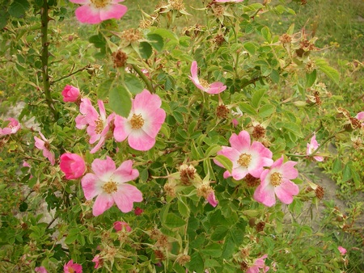
Martin は、
「魚の数は、少ない。でも、美しい風景の中で、素晴らしい魚が釣れる可能性がある」
と言います。
広大な草原の向こうに山塊が見えてから、30分ほどグラヴェル・ロード（砂利道）をかなり揺られながら走って、ようやく山地の入り口に到着しました。パーキング・スペースには2台の車が止まっていましたが、Martin が車内を覗いてみたところ、先行者の目的は釣りではなくハンティングのようです。
タックルのセット・アップを済ませ、川原を歩き始めたのは午前7時10分頃。間もなく、Martin が小さなプールの対岸に定位している鱒を見つけました。鱒の位置を確認した後、He-Day がプールの下流へウェイディングします。
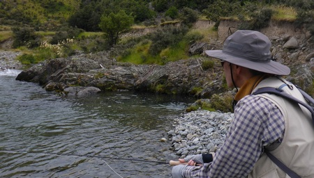
キャスティング距離は10mほど。1投目は、少し鱒の左側へそれてしまいました。2投目は、インディケーター・ドライ・フライが鱒の近くを流れたのですが、ニンフが鱒の鼻先まで沈むには少しキャスティング距離が足りなかったようです。鱒は少し浮上しながら反転してニンフを追う素振りを見せ、少し下流へ泳いだところで He-Day と目が合ってしまった様子。鱒は慌てたように加速し、一気に He-Day の脇をすり抜けて下流へ姿を消しました。
鱒と出会えるチャンスが少ない川で、痛恨のミステイク。Martin のがっかりした様子を見て、He-Day の気持ちも沈んできます。
「大きな鱒を確実にキャッチするためには、“accuracy”：精度 がとても重要だ。」
改めて、以前に何度も聞いた Martin のアドヴァイスが思い出されました。
気を取り直してもう一度川原を歩き始め、1時間ほどたった頃、水深のある瀬の対岸近くに定位している鱒を Martin が見つけました。急流の中で鱒の鼻先まで沈めるために、かなりのへヴィ・ウェイト・ニンフを使用する必要がありそうです。そこで、6wtロッドを手にした He-Day の出番となりました。
流れをはさんで鱒のほぼ真横に立ち、１回のバック・キャストで、ヘヴィ・ウェイト・ニンフを鱒の少し上流へ叩きこむようにプレゼンテーションします。幸い、この場所の川幅は10mほど。それほど苦労することもなく、鱒の鼻先近くへニンフを送り込むことができました。
ところが、鱒は全く反応しません。数回のフライ交換をはさんで、数10回に及ぶキャスティング。プレッシャーに負けてキャスティングに乱れが生じ始めた頃、とうとう待望のストライクの瞬間がやってきました。ロッドにずっしりとした重量感が伝わってきた直後、鱒は激しく水面を割って空中へ飛び出しました。全身がほぼ垂直に躍り出た、激しいジャンプ。He-Day は、思わず
「Like a missile!」
と叫んでしまいました。
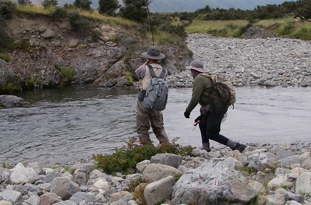
その後、鱒は一気に瀬を駆け下り、下流のプールへ潜っていきました。慌てて He-Day も鱒を追いかけ、プールの流れ込みを対岸へ渡ってラインを張ります。9ft・6wtロッドは大きく曲がったまま。でも、鱒の躍動感は全く伝わってきません。
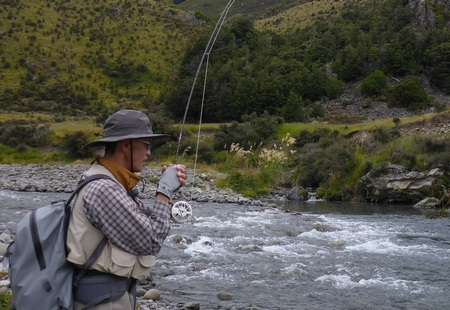
プールの底に沈む岩の間へ逃げ込まれてしまったようです。この日２度目のミステイク。Martin が腰まで水につかりながらリーダーを手繰ると、張力を失ったラインが虚しく垂れ下がりながら戻ってきました。
山と山の間隔が少し広がり、流れの幅も広がった辺りで、大きなプールに出会いました。川岸はやや高い崖になっており、姿勢を低くして崖の上からプールの中を観察します。ほどなく、プールの中央付近の中層でフィーディングしている大きな鱒の姿が見えました。中層とはいっても、相当の水深があるため、今回もヘヴィ・ウェイト・ニンフの出番です。比較的足場がよい場所を選んで、He-Day が慎重に崖を下って流れの中に降り立ちました。
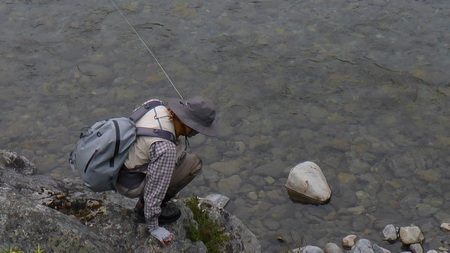
ゆっくりと流れを渡って鱒の下流へ近づき、10mほどの距離からキャスティングを開始。数投目、うまくフィーディング・レーンに乗ったインディケーター・ドライ・フライが横に揺れるような動きを見せました。すかさずロッドを立てて合わせると、軽い手応えだけを残して、フライ・ラインが宙を舞いました。崖の上にいる Martin を見ると、両手を小さく開いて肩をすくめて見せます。
「鱒はいなくなった」
というサイン。この日3度目のミステイク。重い流れを遡行しながら、気持ちも重くなってきていることを実感せざるを得ませんでした。
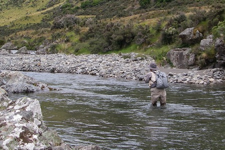
いつの間にか空は真っ青になり、雲一つない快晴となりました。サイト・フィッシングには最適な状況となりましたが、それだけに鱒がいないこともはっきりと分かります。周囲の山々には、白い花に彩られたマヌーカの木が散在する美しい森林が広がっていましたが、それをゆっくりと眺める間もなく、鱒を探して黙々と川原を歩き続けました。
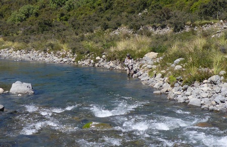
午前11時近くになって、Martin がこの日４匹目の鱒を見つけました。対岸の崖際にできた大きなプールの開きの底近くに定位し、時折左右に小さく動いてフィーディングしています。鱒の泳層が深いということで、また6wtロッド、He-Day の出番です。下流の瀬まで下って流れに入り、対岸近くまで渡った後、プールへ向かってゆっくりと接近しました。
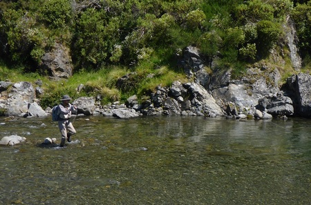
右側からプールへ流れ込んで岩盤にぶつかった後、流れが下流へ向きを変え、流速が少しゆるやかになった辺りでフィーディングしている鱒の姿が見えます。鱒から12mほど下流の浅場で足元を固めて、キャスティングを開始。２投目に鱒が水中ですっと動き、インディケーター・ドライ・フライが沈みました。即座にロッドを立てると、また軽い手応えを残して、フライ・ラインが宙を舞いました。膝から崩れ落ちそうになりながらプールを見ると、まだ鱒は水底近くに留まっています。
「He-Day !」
と呼ぶ Martin の抑えた声が聞こえて右側の少し高いバンクの方へ視線を移すと、盛んに手招きしているのが見えました。
He-Day がバンクの上まで戻ると、Martin は
「鱒は元の場所に留まっているから、まだチャンスはある。時間を置いて、再度チャレンジしよう」
と言います。そこで、高いバンクの上から鱒の様子を観察しながら、ランチ・タイムを楽しむことにしました。日差しはかなり強いのですが、空気はさらっとしていて、時折吹いてくる風がとても心地よく感じられます。改めて、川と周りの森林の美しさが目に飛び込んでくるような気がしました。
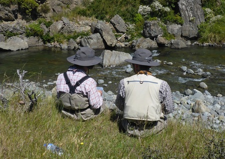
ランチ・タイムが終わる頃には、鱒はフィーディングを再開していました。ニンフを#14スウィミング・メイフライに交換し、Martin の “Good luck!” という声に背中を押されて、先ほどと同じ場所へ移動します。１投目から、フライはフィーディング・レーンに乗りました。一瞬の後、インディケーター・ドライ・フライが水面から姿を消します。反射的にロッドを立てて合わせると、肘にドスンと響く懐かしい衝撃が伝わってきました。
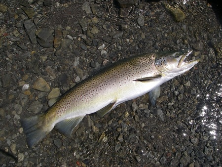
ロッドをしっかり立てて流れを渡り、川原へ上がって鱒とのやり取りを開始します。鱒は何度もリールからラインを引き出し、プールの中を駆け回りました。疲れを見せ始めた鱒は、岸近くに頭を出した岩の向こう側へ回り込もうと試み、ティペットが岩に擦られる嫌な感触が伝わってきます。何とか鱒を浮かせて岸辺の砂地まで引き寄せたところで、Martin が鱒をネットに収めてくれました。
73cm・10.5lbの雄。威厳を感じさせる整った風貌は、ゴールドやシルヴァー、ダーク・ブラウン、そしてメタリック・ブルーなど、様々な色の輝きを放っています。He-Day は、この日初めての歓喜を味わうことができた幸運に感謝するばかりでした。
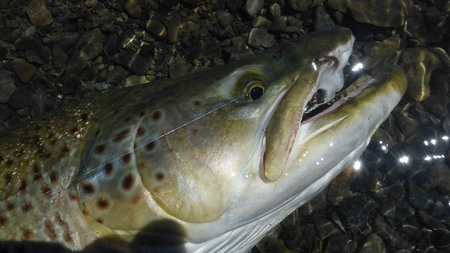
再び遡行を始めて30分ほどたった頃、Martin がこの日５匹目の鱒を見つけました。小高いバンクの上からそっと覗くと、流れの緩やかな瀬の開きに定位している鱒の姿が見えます。今回はライト・ウェイト・ニンフがよいということで、5wtロッド、Me-You の出番です。
「He-Day がサポートしたらいい」
という Martin の助言を受けて、Me-You と二人で下流の流れを渡り、鱒の背後へ近づきました。今回のニンフは、#14タングステン・ビード・ヘッド・フェザント・テイル。鱒の10mほど下流から、そっとプレゼンテーションします。
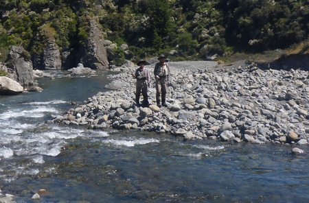
数投目に、インディケーター・ドライ・フライが沈み、Me-You のロッドが大きく曲がりました。鱒は水面を割って空中へ躍り出した後、瀬を駆け下ってプールの底へ向かって突進します。何とか鱒を浮かせて引き寄せたところで、また流心へ逃げ込まれてラインがじりじりと出ていくという状況が長く続きました。10分以上もやり取りを続けた末に、鱒はプールの流れ込みの脇でようやく Martin のネットに収まりました。頬を美しいメタリック・ブルーに染めた、65cm・8.5lb、厳つい表情の雄。Me-You がそっと流れの中へ戻すと、鱒はゆっくりとプールの底へ消えていきました。
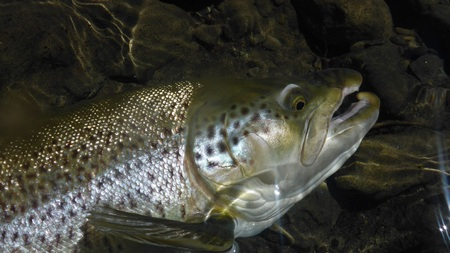
帰路は、川から上がって少し高い所を辿る track（小径）を歩きました。日差しはランチ・タイムの頃よりさらに強くなっていましたが、風は相変わらず爽やかです。川を見下ろしたり、track 沿いに群生しているマヌーカの花を間近で観察したり、草地で休んでいる羊の写真を撮ったり…。
この日歩いた距離は、12kmほど。暑さも手伝ってかなりの疲れも感じましたが、出会った鱒と美しい風景に心は満たされていました。
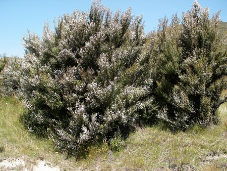
Day 4
フィッシング･トリップ4日目。天気予報は晴れということで、平原を流れるサイト・フィッシングに適した川へ出かけました。Martin が「最高のセクション」だという中流域へ向かいます。ところが、1時間30分ほどのドライヴの間に、X-TRAILの外気温計の表示が8℃～21℃の間を何度も上下するという、不可思議な状況。外気温計の表示が大きく変わるたびにMartin はウインドウを少し開けて右手を出し、車外の気温を確かめます。
「外気温計の故障ではない。おかしな天候だ」
という Martin のつぶやきを耳にして、不安が He-Day の胸中に広がり始めました。
午前7時過ぎに川沿いのパーキング・スペースを後にして、川原から少し離れた草原を下流方向に向かって歩き始めました。間もなく、遠くの山脈の頂に太陽が顔を出しました。
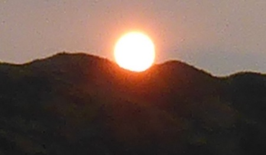
2020年の幕開け。川のほとりで初日の出を目にするのは、He-Day と Me-You にとって初めての経験です。思わずしばらく足を止め、薄雲に覆われた空をゆっくりと昇っていく、少しぼんやりとしたオレンジ色の輝きを眺めていました。
1時間15分ほど歩いた後、川原でタックルのセット・アップを済ませて流れに接近します。NZ南島では珍しい、妙に蒸し暑い天候。太陽はいつの間にか厚さを増した雲に隠され、水中の鱒の姿を見つけるのは難しい状況になっていました。
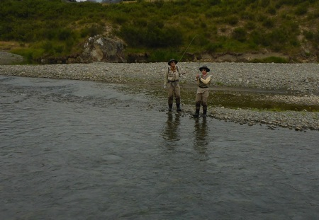
目の前には、やや流れの速い浅いプールが広がっています。Martin の助言を受けて、Me-You がプールの開きでキャスティングを始めました。足首くらいの水深の浅場に立ち、10数mのラインを出して、流れの筋を丁寧に探っていきます。数投目に尖った鼻先が小さく水面を割って、タン・カラーの#14インディケーター・ドライ・フライの姿が消えました。Me-You が素早くロッドを立てて合わせると、ロッド全体が大きな弧を描きます。
鱒は何度も水面を大きく割って反転を繰り返し、流心へ逃げ込もうとしましたが、少しずつ浅場へ引き寄せられてきます。対岸にいた Martin が、写真を撮りながらこちらへ渡ってきました。
「もう大丈夫だ。リラックスして」
という Martin の声を聞きながら、Me-You はロッドをしっかりと支えて、川原をゆっくりと後退していきます。浅場へ乗り上げた鱒の体が横倒しになったところで、Martin が鱒の尾の付け根をそっと掴み、流れが穏やかな場所へ横たえました。
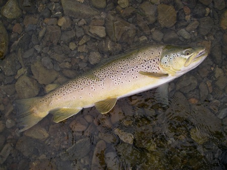
歴戦の勇士と呼ぶにふさわしい、逞しく盛り上がった背と古い傷跡が残る尾ひれ。そして、それと対照的な優しい目や端正な顔立ちが印象的な70cm・9.5lbの雄。Me-You が流れの中で鱒の体をそっと支えると、しばらく身を休めた後、ゆっくりと流心へ向かって姿を消していきました。
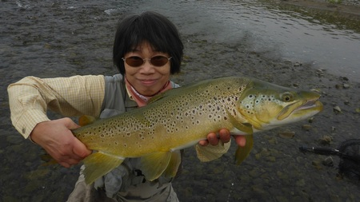
鱒を見送ったのが、午前8時40分頃。それから3時間以上遡行を続けましたが、サイト・フィッシングで狙えるような鱒の姿を見つけることはできませんでした。鱒が潜んでいそうな水深と流速を備えた瀬やプールに出会うたびに、期待を込めてキャスティングを繰り返しましたが、鱒の反応は全くないまま、時間だけが過ぎていきます。
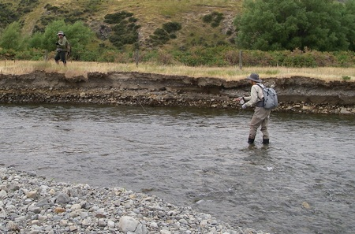
パーキング・スペースの近くまで戻ってきた時、Martin が
「どうする？」
と尋ねました。He-Day が
「これ以上遡行しても、可能性はほとんどないと思う」
と答えると、Martin も
「自分もそう思う。今の状況は “hopeless” ：望み無しだ」
と言います。
結局、この日も “early finish” を選択しました。ただし、これまでとは違って、無念の撤退。さすがに帰路の車中では3人とも口数が少なく、いつになく静かなドライヴとなりました。
-->釣行日誌ＮＺ編 目次へ
サイトマップ
ホームへ
お問い合わせ